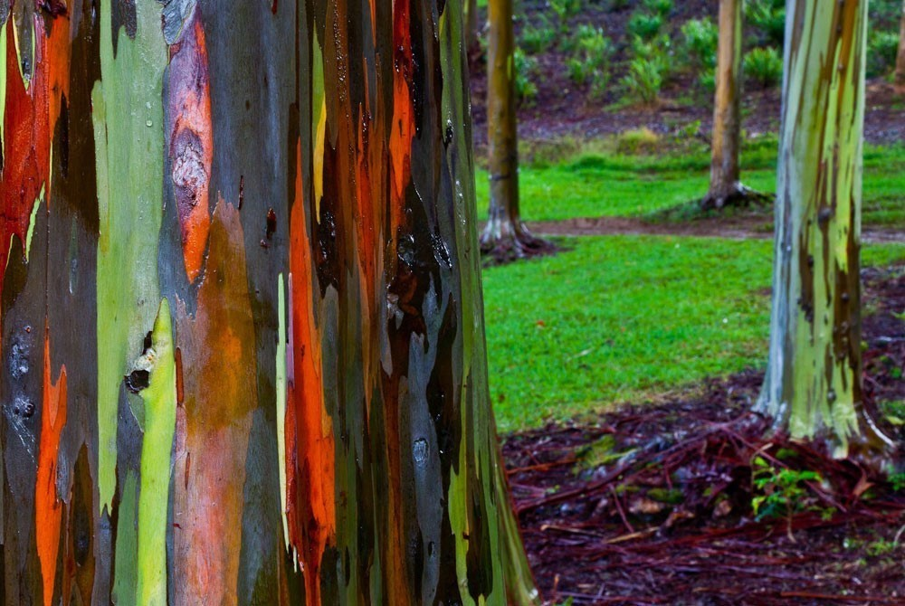

Entre todos los árboles exóticos, existe uno muy particular que tiene debajo de su corteza un arcoíris. Lleva el nombre de Eucalipto Arcoiris y es el único que crece naturalmente en el hemisferio norte.
La naturaleza es nuestra maestra más sabia y nos muestra que, a pesar de lo que ocurra en el entorno, nuestro interior puede florecer de todas maneras, con la misma intensidad y brillo. Cuando afuera los colores se vuelven opacos es cuando más podemos pulir los nuestros internos y cambiar el paisaje en el que estamos.
Este árbol crece en la selva, pero destaca su capacidad de adaptarse a cualquier ecosistema. Se trata de una especie muy especial, porque florece en cualquier momento del año, sin importar la estación o las condiciones climáticas. Su corteza es suave y va mutando de color por su contacto con el aire. ¿Y sabés cuándo tiene más color? Justamente en las temporadas de lluvia. Debajo de su corteza asoman las tonalidades que van desde los naranjas y rojos hasta colores azules, verdes y violetas. Este rasgo multicolor aparece como efecto de la oxidación de la corteza. Podemos decir que este árbol es un experto alquimista que convierte las dificultades en fortalezas, y de una forma preciosa.
La tierra nos invita a reflexionar y nos inspira con sus manifestaciones divinas. ¿Qué podemos aprender de este árbol para nuestra vida cotidiana?